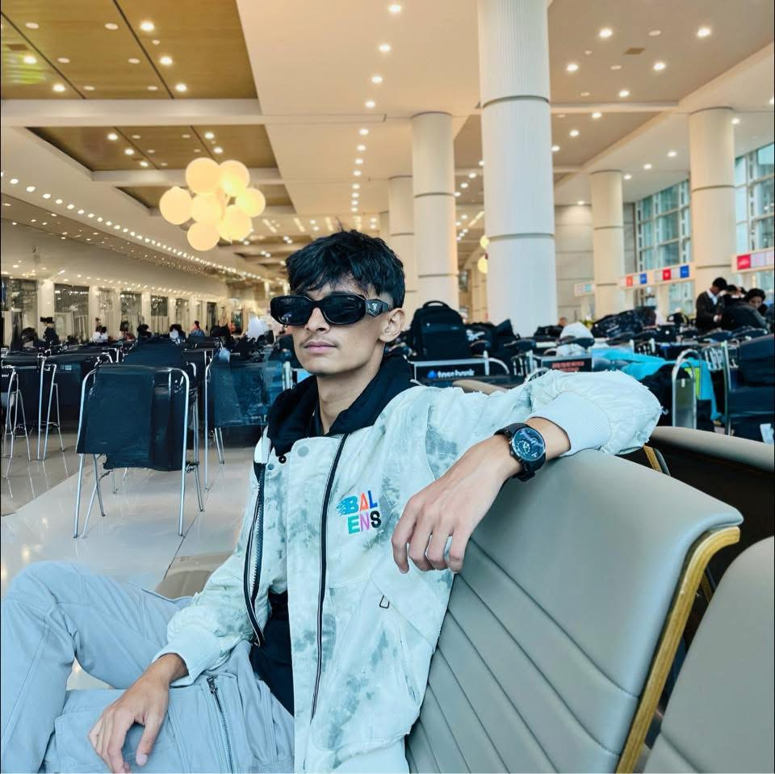

Macintosh OS Portfolio
Personal Portfolio · 2026Interactive macOS Monterey desktop portfolio featuring draggable windows, zsh Terminal, and 3D flip Profile Card.
"a Developer| — crafting modern software & AI solutions at UNIST, South Korea"

Passionate Programmer · Web Developer
About
IT student at Ulsan University of Science and Technology. Passionate about web development, AI, and modern software solutions.
Education
B.Tech in IT · Ulsan University of Science and Technology (2025–Present)
Skills
Frontend, Backend, AI & ML — building modern digital solutions across the stack.
Contact
aryalsunily@gmail.com · Ulsan, South Korea
Computer Science & Information Technology student at Ulsan University of Science and Technology (UNIST) in South Korea. Driven by a curiosity for how technology works and a desire to build software that improves lives.
Building responsive, accessible interfaces with modern frameworks and design systems.
Developing robust APIs and server-side applications with Java and Python.
Writing clean, efficient code across multiple paradigms from scripting to OOP (Python, Java, JS, C).
Designing data models and managing development infrastructure with MySQL, Git & Linux.
Exploring ML algorithms, data analysis, and AI integration for intelligent web applications.
I'm Sunil Aryal, an IT student at Ulsan University of Science and Technology in South Korea. My interests span web development, database systems, and artificial intelligence. Currently focused on full-stack development and exploring AI integration in web applications.
Ulsan University of Science and Technology, South Korea
Online certifications, bootcamps, and self-directed learning in web development, AI, and databases.
KMGSS, Butwal — Science (Physics, Chemistry, Mathematics, Biology)
Riyale Secondary School, Gulmi — Ranked first in the local level
help to list available commands (try whoami, skills, education, card, social).Switch the active section text inside the Front of your Old Profile Card:
Interactive macOS Monterey desktop portfolio featuring draggable windows, zsh Terminal, and 3D flip Profile Card.
Intelligent web applications combining Python machine learning pipelines, data analysis, and modern web UIs.
Java & Python backend services backed by normalized MySQL schemas, authentication, and responsive dashboards.
Custom interactive cards, SVG morphing blobs, micro-animations, and brand identities.